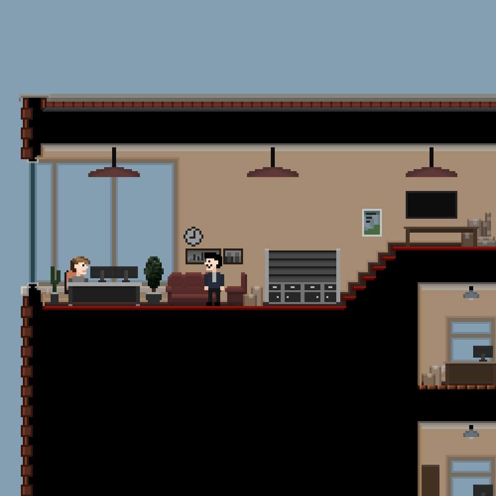

Žaidimo dizainas
Atgal
8 bit retro stiliaus platforminis kompiuterinis žaidimas. Žaidimo logika vykdoma „Godot“ žaidimo variklio, o logika parašya programavimo kalba „GDscript“. Žaidimo „tileset“ UI elementai buvo piešti su programa Krita.(under construction)
